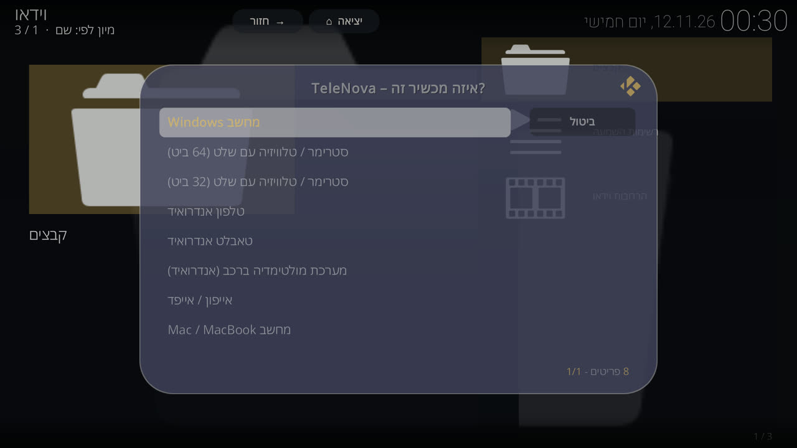
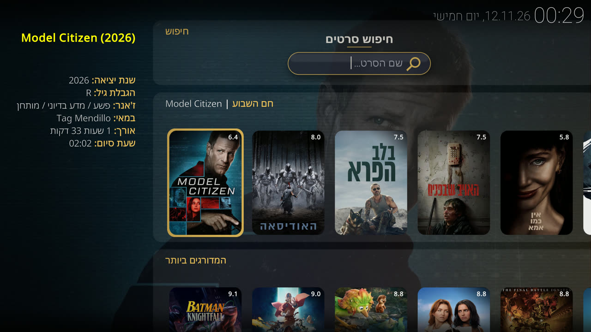
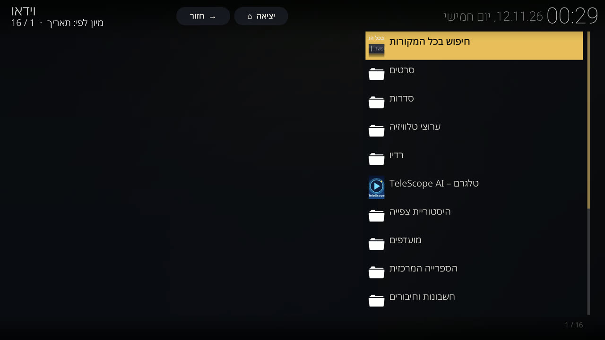
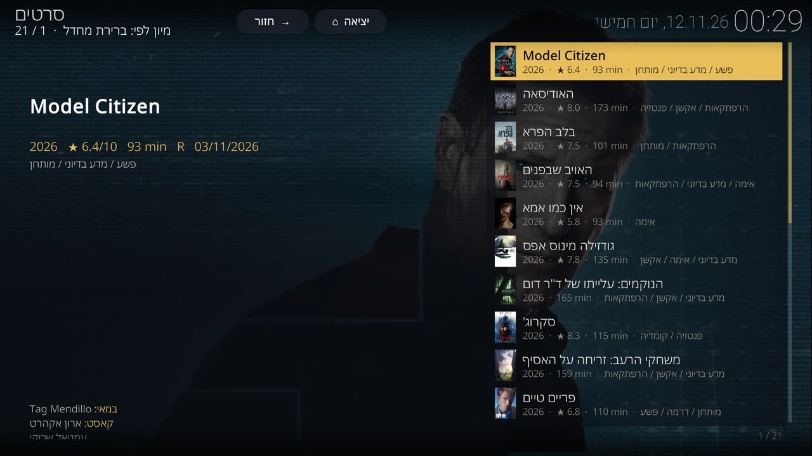
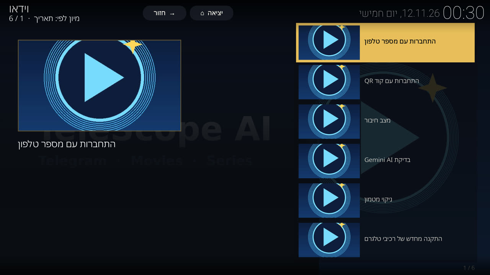
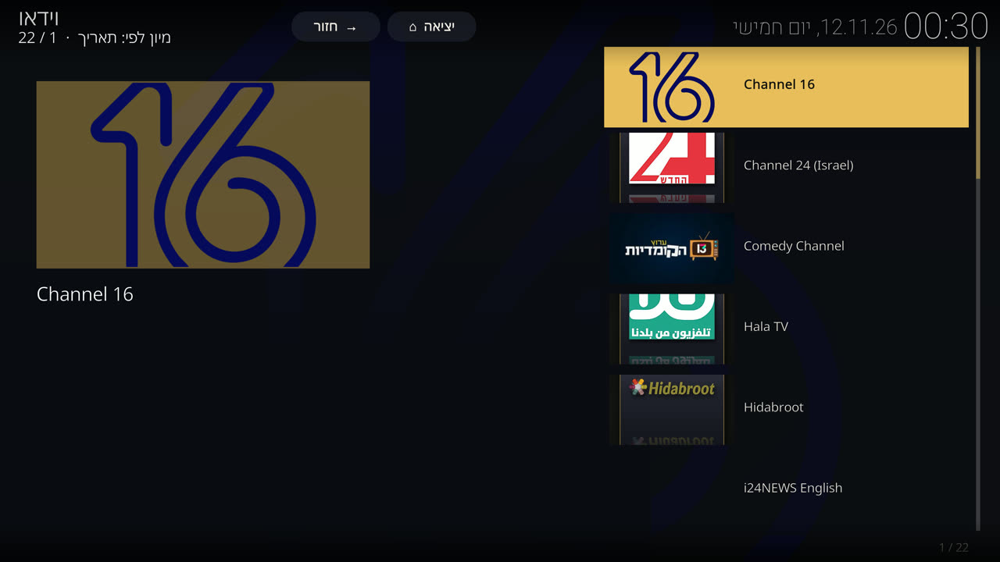

TeleNova – מדריך למשתמש
גרסה 3.3 · Kodi 21 · סרטים, סדרות, ערוצים ורדיו עם קישורים מהטלגרם שלך
התקנה
| מכשיר | איך מתקינים |
|---|---|
| מחשב Windows | מורידים את TeleNova-Setup.cmd מעמוד הבית ולוחצים עליו פעמיים. הוא מתקין את Kodi (אם חסר) ואת הבילד, ובודק שההורדה שלמה. נתוני Kodi קודמים נשמרים בתיקיית גיבוי ולא נמחקים. |
| סטרימר / טלוויזיית Android, טלפון, טאבלט, מסך רכב | מתקינים Kodi 21 מחנות האפליקציות. ב-Kodi: הגדרות ← מנהל קבצים ← הוסף מקור ← https://bennymat93.github.io/TeleNova/. אחר כך: תוספים ← התקן מקובץ zip ← repository.telenova, ומהמאגר מתקינים את TeleNova Wizard ומפעילים אותו. |
| iPhone / iPad / Mac | כמו בשורה הקודמת, אחרי התקנת Kodi למכשיר. ב-iOS שם האפליקציה והסמל נשארים "Kodi" (כלל של Apple). |
האשף מציע שתי אפשרויות:
- עדכון – שומר חשבונות, היסטוריה, מועדפים והמקורות שלך.
- התקנה נקייה – מוחק הכול, כולל הגדרות ישנות של כל התוספים.
בסיום Kodi נסגר. פותחים אותו שוב והבילד מוכן. בהפעלה הראשונה רשימת הערוצים נטענת תוך כדקה.
זיהוי המכשיר
בהפעלה הראשונה הבילד מזהה בעצמו על איזה מכשיר הוא רץ ומגדיר את עצמו בהתאם: גודל המטמון, מגע או שלט, שומר מסך, התאמת קצב רענון ופענוח חומרה.
| פרופיל | למי | מה מיוחד בו |
|---|---|---|
| מחשב Windows | מחשב נייח או נייד | עכבר ומקלדת, פענוח חומרה של Windows |
| סטרימר 64 ביט | קופסאות וטלוויזיות Android עם שלט | שלט בלבד, התאמת קצב רענון לסרט |
| סטרימר 32 ביט | קופסאות חלשות יותר | מטמון קטן (עד 64MB) וקריאה-מראש מתונה, כדי שלא ייגמר הזיכרון |
| טלפון / טאבלט Android | מסכי מגע | מצב מגע, מטמון עמוק יותר לרשת סלולרית |
| מסך רכב Android | מערכות מולטימדיה | בלי שומר מסך ובלי עמעום, מטמון עמוק למנהרות ולמעברי אנטנה |
| iPhone / iPad | מכשירי Apple ניידים | מצב מגע |
| Mac / MacBook | מחשבי Apple | עכבר ומקלדת |
לשינוי ידני בכל זמן: TeleNova ← סוג מכשיר.

מסך הבית

- סרטים / סדרות – חיפוש, "חם השבוע", המדורגים ביותר, ולפי קטגוריה ושנה.
- טלוויזיה ורדיו – ערוצים חיים, ערוצים לפי מדינה ותחנות רדיו.
- מועדפים – סרטים, סדרות, ערוצים ותחנות ששמרת, והיסטוריית הצפייה.
- TeleNova – התפריט המלא: חיפוש בכל המקורות, חשבונות, גיבוי, מצב המערכת ועדכון.

צפייה בסרט או בסדרה
- בוחרים כותר מהרשימות, או מחפשים בחיפוש בכל המקורות.
- נפתחת רשימת קישורים אחת: קודם קישורי הטלגרם (מותאמים לכותר המדויק ונבדקים), אחריהם שאר המקורות.
- בוחרים קישור והסרט מתחיל. התאמות קרובות אך לא ודאיות מסומנות ב-
?.

בסדרות: בוחרים עונה ואז פרק. פרק שנצפה מסומן בנקודה ירוקה עם תאריך הצפייה. בזמן צפייה, כפתור "החלף מקור" בנגן פותח שוב את רשימת הקישורים של אותו כותר.
חיבור הטלגרם
קישורי הטלגרם מגיעים מהערוצים והקבוצות של החשבון שלך. החיבור נעשה פעם אחת:
- נכנסים מהדפדפן ל-
my.telegram.org← API development tools, ויוצרים אפליקציה. מקבליםapi_idו-api_hash. - ב-Kodi: TeleNova ← טלגרם – TeleScope AI ← הגדרות, ומזינים את שני הערכים.
- חשבון ומצב ← "התחברות עם קוד QR": סורקים את הקוד מהטלגרם בטלפון (הגדרות ← מכשירים ← קישור מכשיר), או "התחברות עם מספר טלפון" וקוד.
api_hash או את קוד ההתחברות לאף אחד.
מקסימום תוכן מטלגרם
המנוע מחפש בערוצים, בקבוצות ובצ'אטים של בוטים שבחשבון שלך, בערוצים ציבוריים שהוספת לחיפוש, ומבקש את הכותר מבוטים. לכן הדבר שהכי משפיע על כמות התוכן הוא רשימת הערוצים והבוטים שלך.
1. להצטרף ליותר ערוצים
- הטלגרם שלי ← "הערוצים והקבוצות שלי" מציג את הרשימה שלך, ומאפשר לעיין בקבצים של כל ערוץ.
- "גילוי ערוצים ציבוריים" מוצא ערוצים, קבוצות ובוטים ומאפשר לפתוח אותם או להצטרף ישירות מ-Kodi (פירוט בהמשך). אפשר גם להדביק קישור הזמנה.
- כדאי להצטרף לערוצי סרטים וסדרות בעברית, וגם לערוצים באנגלית וברוסית – המנוע מחפש בשלוש השפות.
- צ'יקו מדיה: ערוצים שהשם שלהם מכיל את מילות המפתח שבהגדרות מקבלים עדיפות בתוצאות ונפתחים כקטלוג נפרד.
2. בוטים (חדש ב-3.3.3)
בטלגרם יש בוטים ששולחים קובץ רק כשמבקשים מהם: כותבים שם של סרט, הבוט מחזיר רשימת כפתורים, ולחיצה על כפתור שולחת את הקובץ. המנוע עושה את זה בשבילך, אוטומטית, בזמן החיפוש.
- איך זה עובד: כשבוחרים סרט או פרק, המנוע כותב לבוט את שם הכותר, קורא את התשובה, לוחץ רק על הכפתורים שמתאימים לכותר ולפרק שביקשת, עוקב אחרי קישורים לבוט-מחסן (
t.me/bot?start=...), ומוסיף את הקבצים שהתקבלו לרשימת המקורות. מקור כזה מסומן בוט. - מאילו בוטים מבקשים: רק מבוטים שכבר שלחו לך סרטונים בעבר (זיהוי אוטומטי), מבוטים שסימנת "לבקש תמיד", ומבוטים שרשמת בהגדרות. המנוע לעולם לא כותב לבוט אחר (בנק, משחק, עוזר אישי).
- הטלגרם שלי ← הבוטים שלי: רשימת הבוטים שלך עם המצב של כל אחד (נשאל תמיד / נשאל אוטומטית / לא נשאל) וכמה קבצים הביא. לחיצה ארוכה על בוט: "בקשת תוכן מהבוט", "לבקש תמיד", "לא לבקש".
- בקשה ידנית: פותחים בוט ובוחרים "בקשת תוכן מהבוט", מקלידים שם, ומקבלים את הקבצים כרשימה לניגון.
- בוט שדורש הצטרפות לערוץ: המנוע לא מצטרף בלי רשות. תופיע שאלה "להצטרף ולבקש שוב?". מי שרוצה שזה יקרה לבד מפעיל בהגדרות ← בוטים ← "להצטרף לערוצים שבוט דורש, בלי לשאול".
- איך מוצאים בוטים: גילוי ערוצים ציבוריים ← "בוטים של סרטים וסדרות". פותחים בוט, מבקשים כותר, ואם הוא טוב מסמנים "לבקש תמיד".
גילוי ערוצים – מה חדש
- תפריט מוכן: חיפוש לפי טקסט, "ערוצים דומים" (ההמלצות של טלגרם לערוצים שכבר יש לך), וחיפושים מוכנים לפי שפה ונושא.
- התוצאות כוללות ערוצים, קבוצות ובוטים, מדורגות לפי רלוונטיות וגודל הקהל, ומסומן מה כבר אצלך. ערוצים שטלגרם סימן כהונאה לא מוצגים.
- לחיצה על ערוץ ציבורי פותחת אותו לצפייה בלי להצטרף. בלחיצה ארוכה: "הצטרפות", או "לכלול בכל חיפוש (בלי להצטרף)" – הערוץ ייסרק בכל חיפוש גם בלי חברות.
רשימת המקורות – איך לקרוא אותה
- שורה ראשונה: איכות (4K בזהב, 1080p בכחול, 720p בירוק), קידוד, שפות, גודל, אורך, ומצב הבדיקה:
✓ נבדקעם המהירות שנמדדה, ואחוז ההתאמה לכותר. - שורה שנייה: מאיפה הקובץ (בוט / ערוץ / קבוצה ושם המקור) ושם הקובץ.
- ✓ ליד "תרגום עברית": הכתוביות בעברית נמצאו בתוך הקובץ עצמו, לא רק בשם שלו.
- כל קישור ברשימה נבדק לפני שהוא מוצג. קישור מת מוחלף בעותק של אותו קובץ מערוץ אחר, או מוסר. קובץ שהאורך האמיתי שלו לא מתאים לסרט (דוגמית, קליפ) מוסר. בכותרת הרשימה כתוב כמה נבדקו, כמה תקינים וכמה הוסרו.
Real-Debrid (חדש)
- חיבור: TeleNova Telegram ← חשבון ומצב ← "Real-Debrid – לא מחובר". מופיע קוד; בטלפון או במחשב פותחים
real-debrid.com/device, מזינים את הקוד ומאשרים. אפשר גם להדביק מפתח API בהגדרות ← Real-Debrid. החיבור נשמר, מתחדש לבד, ונכלל בייצוא התצורה. - מה מתקבל: בכל סרט ופרק המנוע מחפש טורנטים ש-Real-Debrid כבר מחזיק (מוכנים להפעלה מיידית) וגם את הקבצים שבענן שלך ב-Real-Debrid.
- סדר התוצאות: קודם טלגרם, אחר כך Real-Debrid (מסומן RD בזהב, "מוכן להפעלה"), ואחר כך כל שאר המקורות.
- בדיקה קלה יותר: Real-Debrid הוא מקור יציב, ולכן קישורים שלו לא עוברים בדיקת הורדה בזמן החיפוש (חוסך זמן). אם קישור נכשל בהפעלה – המנוע עובר לבד למקור הבא.
- פרטיות: כדי לדעת מה מוכן ב-Real-Debrid, המפתח נשלח לאינדקס Torrentio (כך עובדים Stremio ותוספים נפוצים). מי שלא רוצה – מכבה בהגדרות "בדיקת זמינות דרך האינדקס"; אז הבדיקה נעשית ישירות מול Real-Debrid רק כשבוחרים קישור (איטי יותר בכמה שניות).
3. להפעיל את Gemini (חינם)
עם "מפתח Gemini API" בהגדרות המנוע (ועם "הרחבת שמות בעזרת AI" ו"אימות התאמות לא ודאיות בעזרת AI" פעילים), כל חיפוש מורחב לשמות חלופיים של הכותר בעברית, באנגלית וברוסית, והתאמות לא ברורות נבדקות פעם נוספת. התוצאה: יותר קישורים נכונים ופחות פספוסים. את המפתח מקבלים ב-aistudio.google.com.
4. הגדרות שמגדילות את מספר התוצאות
| הגדרה | מה היא עושה | מתי לשנות |
|---|---|---|
| התאמה מחמירה | מציג רק קבצים שעברו את כל הכללים | לכבות כשמחפשים כותר נדיר – יוצגו גם התאמות קרובות, מסומנות ב-? |
| איכות מינימלית | מסתיר קבצים מתחת לאיכות שנבחרה | להוריד ל"הכול" כשאין תוצאות |
| הסתר הקלטות מצלמה (CAM) | מסתיר צילומי קולנוע | לכבות לסרטים שרק יצאו |
| הסתר קישורים איטיים מדי לניגון חלק | מסתיר קישורים שנמדדו כאיטיים | לכבות במכשיר חלש או ברשת איטית |
| מספר תוצאות מקסימלי / תוצאות לכל שאילתת טלגרם | כמה קבצים לאסוף ולהציג | להעלות לכותרים פופולריים עם הרבה גרסאות |
| מקסימום שמות חלופיים / מקסימום שאילתות לחיפוש | כמה ניסוחים של השם לחפש | להעלות לסדרות ישראליות ורוסיות |
5. מקורות נוספים
- Telemedia: אם התוסף מותקן ומחובר, המנוע משתמש בו כמקור נוסף, גם בלי התחברות נפרדת.
- שרתי Stremio: אפשר להוסיף כתובות של שרתים בהגדרות המנוע.
- ב-TeleNova ← הספרייה המרכזית ← מקורות ותוספים מפעילים ומכבים כל מקור, ו"הפעל הכל" כולל את כולם בחיפוש.
6. צפייה חלקה
- ב"חשבון ומצב" מופיעה מהירות הפענוח. מעל 5MB/s כל קובץ יתנגן חלק. מתחת ל-1.5MB/s עדיף לבחור קבצים עד 720p.
- "הורדות מקבילות" ו"טעינה מראש": ערכים גבוהים מאיצים ברשת מהירה. בסטרימר 32 ביט כדאי להשאיר את ברירת המחדל.
- קובץ שנתקע: חוזרים לרשימה ובוחרים קישור אחר – לרוב יש כמה עותקים של אותו קובץ.
ערוצים ורדיו

- הערוצים מקובצים: ישראלי, חדשות, סרטים, סדרות, ילדים, תעודה וטבע, רוסית. ערוץ שהפסיק לעבוד מוסתר, ונבדק שוב מדי פעם – אם חזר, הוא חוזר לרשימה.
- מנוי IPTV משלך: חשבונות וחיבורים ← IPTV ← מזינים קישור M3U וקישור EPG מהספק.
- עידן+: כאן, קשת, רשת, 14 ו-9, כולל VOD.
- רדיו: ישראל, רוסיה, לפי שפה, לפי סגנון וחיפוש.
כתוביות
- אם לסרט יש רצועת כתוביות בעברית משלו – היא נבחרת מיד, ושום חיפוש לא רץ. הזיהוי בודק גם את קוד השפה וגם את שם הרצועה.
- אם אין – הרחבת הכתוביות מחפשת כתוביות בעברית בזמן שהסרט כבר מתנגן.
- כפתור "כתוביות" בנגן: בחירה ידנית, סנכרון, מראה, וכתוביות AI (דורש שרת כתוביות במחשב ברשת הביתית).
גיבוי ועדכון
- גיבוי ושחזור: גיבוי של חשבונות, היסטוריה, מועדפים ו-IPTV לקובץ. פעם בשבוע נשמר גם גיבוי אוטומטי במכשיר.
- Google Drive: סנכרון מועדפים והיסטוריה בין מכשירים וגיבוי לענן.
- עדכון מערכת: מעדכן מאגרים ותוספים ומציג דוח.
- לעדכון הבילד כולו מפעילים את TeleNova Wizard ובוחרים "עדכון".
- העברת הטלגרם למכשיר אחר (חדש): TeleNova Telegram ← חשבון ומצב ← "ייצוא תצורה". נוצר קובץ
.tncfgעם כל ההגדרות של ההרחבה וגם החיבור לחשבון הטלגרם (API ID/hash, הבוטים שבחרת). במכשיר השני: "ייבוא תצורה מקובץ" – הטלגרם מחובר מיד, בלי קוד ובלי QR. מומלץ להגן על הקובץ בסיסמה (המנוע מציע): מי שמחזיק בקובץ יכול להיכנס לחשבון. ייבוא עם סיסמה שגויה או קובץ פגום לא משנה כלום.
הדבקה במקלדת והיסטוריית העתקות (חדש)
- במקלדת של הבילד, מתחת ל"חיפוש קולי", יש לחצן הדבק. כשלא הועתק טקסט הוא אפור ולא ניתן ללחיצה; ברגע שמעתיקים טקסט הוא נדלק.
- לחיצה מוסיפה את כל הטקסט שהועתק אחרי מה שכבר הוקלד. ההדבקה נבדקת: אם השדה לא מכיל בדיוק את הטקסט המלא, הוא מוחזר למה שהיה – אף פעם לא נשאר חצי טקסט. לחיצות מהירות חוזרות לא נתקעות.
- היסטוריית העתקות: כל הטקסטים שהועתקו או הודבקו, החדש למעלה. בחירה בטקסט ← "הדבק", "הצמד" (נשאר תמיד בראש הרשימה – מתאים ל-API hash, סיסמאות Wi-Fi, קישורים שחוזרים עליהם) או "מחק". "נקה היסטוריה" משאיר את המוצמדים.
- במחשב Windows / Mac כל העתקה נרשמת אוטומטית. באנדרואיד ובאייפון המערכת מאפשרת לקרוא את הלוח רק כשלוחצים "הדבק" (כדי לא להציג הודעת "Kodi הדביק מהלוח" כל שנייה) – לכן שם נרשם מה שהודבק.
אייפון ואייפד
- מתקינים את Kodi 21.3 מדף ההורדה (Sideloadly), ואז את הבילד דרך מנהל הקבצים – בדיוק כמו בכל מכשיר.
- הבילד מזהה אייפון/אייפד ומגדיר פרופיל מתאים. הערוצים (IPTV) ו-YouTube משתמשים ברכיבים המובנים ב-Kodi לאייפון, והבילד מסיר את גרסאות Windows שלהם אוטומטית.
- מנוע הטלגרם באייפון משתמש בספריית ההצפנה של המערכת (CommonCrypto) – כמה מגה בייט בשנייה במקום 0.1. ב"חשבון ומצב" מופיע
commoncryptoוהמהירות שנמדדה. - עם Apple ID חינמי צריך לחתום מחדש כל 7 ימים; הבילד והחיבור לטלגרם נשמרים.
פתרון בעיות
| מה קורה | מה לעשות |
|---|---|
| אין קישורי טלגרם לכותר | לבדוק ב"חשבון ומצב" שהחשבון מחובר. להצטרף לעוד ערוצים. לכבות "התאמה מחמירה" ולנסות שוב. |
| ההודעה "לא מחובר לטלגרם" | החשבון התנתק. "חשבון ומצב" ← התחברות. |
| הסרט נעצר לטעינה | לבחור קישור אחר או איכות נמוכה יותר. לבדוק את מהירות הפענוח ב"חשבון ומצב". |
| רשימת הערוצים ריקה | ללחוץ על שורת הרענון שמופיעה ברשימה, או להמתין דקה אחרי הפעלה ראשונה. |
| ערוץ לא נפתח | הבילד מנסה שוב לבד פעם אחת. אם זה ערוץ ממנוי IPTV – ייתכן שהמנוי מאפשר חיבור אחד בלבד. |
| הפרופיל לא מתאים למכשיר | TeleNova ← סוג מכשיר ובוחרים ידנית. |
| משהו אחר לא עובד | מצב המערכת מציג מה מותקן ומה פעיל. עדכון מערכת מציע תיקונים אוטומטיים. |